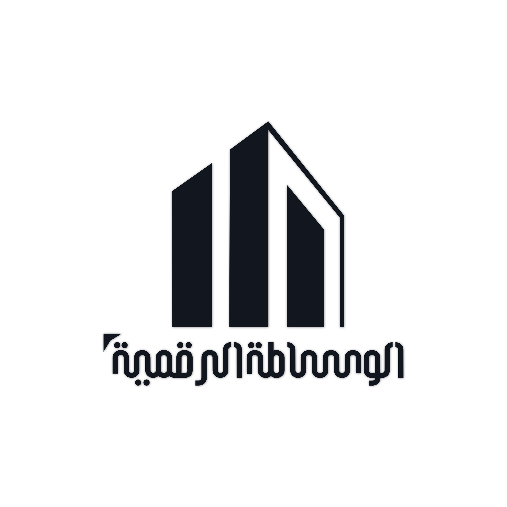

أربعة اتجاهات مختلفة في التخطيط والتفاعل. كل اتجاه يضم الوضع الفاتح والداكن، مع اختيار الصفحات وحركة قابلة للإيقاف.

صور واسعة وبحث أمامي للعروض والصفحات العامة.
افتح القالب ←تنقل دائم ومحتوى منظم للوحة المعلومات والطلبات.
افتح القالب ←عناوين معمارية قوية وإيقاع بصري للصفحات التسويقية.
افتح القالب ←كثافة أعلى ومسافات أقل للعمليات المتكررة.
افتح القالب ←